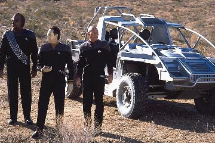
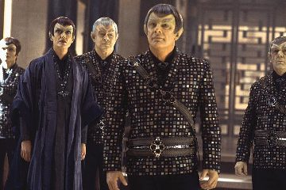
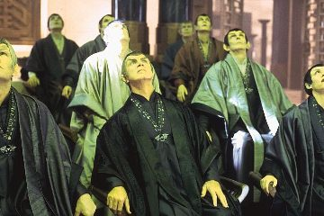
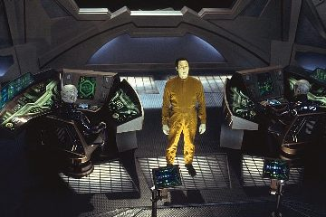
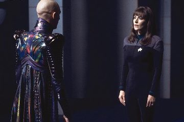
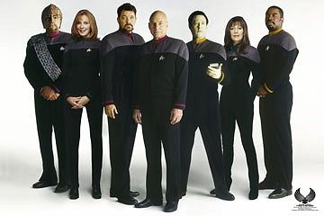
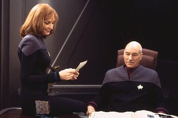

|

Medonha despedida
Por
Luiz
Castanheira
Este o pior filme
de Jornada desde o fiasco do filme V e Shinzon se
junta ao infame Sybok como um dos mais ridculos personagens da
histria desta marca de mais de 36 anos de vida. Infelizmente a srie
A Nova Gerao recebe (ao que tudo indica) uma medonha
despedida, vitimada pelo crescente ego de Patrick Stewart e pela
mais absoluta falta de viso e da descarada reciclagem (de tudo
literalmente) a que os responsveis criativos atuais pela
franquia vm impondo aos fs. O roteiro de "Nmesis"
tem que melhorar muito para ficar ruim. Mais detalhes sobre o
maior fiasco comercial de Jornada no cinema, e melhor: sem
precisar assistir a este lixo. Nas linhas abaixo.

Tendo um roteirista familiarizado com Jornada, exceto com Deep
Space Nine, trouxe uma histria que j nasceu errada. A
guerra com o Dominion terminou com a Federao e os Romulanos
como aliados, com a cerveja Romulana legalizada e com um claro
intercmbio poltico, militar e cientfico entre os dois
governos. Agora em "Nmesis" toda esta situao
foi desconsiderada sem nenhuma explicao. Worf deixou DS9 pra
se tornar embaixador da Federao no mundo natal Klingon e brao
direito do Chanceler Martok, uma posio absolutamente invejvel.
Em "Nmesis", Worf volta (tambm sem nenhuma
explicao) para ser oficial de segurana de Picard. Ou seja,
disparar as armas e dizer que os escudos esto em "X%"
e tambm (como no filme anterior) ser ridicularizado sempre que
possvel. A gota d'gua vem em uma inacreditvel fala: "Os
Romulanos lutaram com honra". E os problemas apenas comeam
ai.
(Talvez por isto Michael Dorn tenha enviado a sua interpretao
"via fax" para no se comprometer muito.)
(Engraado que o porre que Worf toma parece estar relacionado a
uma dor de cotovelo pela Troi. Lembrados do bizarro par Worf e
Troi? Santo Logan.)
(Felizmente toda a tecnologia do futuro trazida a terra no episdio
final de Voyager, "Endgame", tambm foi
esquecida.)
Curiosamente os Romulanos no recebem o tratamento devido no cinema
(mais uma vez), outra fonte de frustrao que o filme encerra. O
grande destaque fica para os Remans (infelizmente), dos quais
nunca ouvimos falar nada antes. No que as informaes dadas no
filme ajudem muito. Eles j eram nativos daquele planeta quando
os Romulanos ancestrais chegaram a aquele sistema estelar? Eles so
uma mutao dos Romulanos ancestrais que foram para Remus
(reparem nas orelhas pontudas)? Eles tm todos algum tipo de
telepatia latente (j que os Romulanos no possuem)? Obviamente
nem todos os Remans trabalham nas minas, pois vemos cientistas e
militares no filme. Como seria a hierarquia deles dentro da
sociedade Romulana? Como foi possvel Shinzon chegar a comandar
tropas na Guerra do Dominion? Como no chamou a ateno de
todos presena de um humano comandando tropas de Remus lutando
lado a lado com tropas Federadas?

(Ser que vamos ver os Remans em Enterprise nem que seja
para economizar na maquiagem?)
Usando de forma descarada o molde (ou tentando usar - o que ainda
pior) da "Ira de Khan" (as similaridades saltam aos
olhos durante o filme), o roteiro de Logan cria do nada um vilo
relacionando ao passado de Picard. Shinzon um clone do capito,
feito pelos Romulanos anos antes de Picard assumir a nave mais
importante da frota e ganhar um respaldo tal que justificasse
tanto trabalho por parte do Imprio. O mais improvvel ainda
ocorreu, eles no o utilizaram, no mataram o clone e ainda o
mandaram para as minas de Remus. Talvez Shinzon seja um vilo com
idia de Khan e execuo de Sybok. Fascinante.
(Apesar deste esforo em "reviver o filme II", o
resultado saiu bem parecido com o filme anterior, especialmente o
incio no casamento e o final.)
A discusso do tema principal do filme largamente nula. A
dualidade entre Shinzon e Picard no empolga em nenhum momento. A
cena da morte de Shinzon se torna particularmente pattica para
Picard (que fica em estado de choque), pois em nenhum momento este
elo entre os dois envolve o espectador. O tema de clonagem (de uma
maneira geral) se encontra largamente desgastado hoje em dia e j
foi amplamente parodiado (ocorreu mesmo a comparao de Shinzon
com o infame "Dr. Evil" da srie "Austin Powers"
durante a temporada Americana de "Nmesis" por
parte de alguns crticos). O mais engraado que o tema de
clonagem no novo em Jornada (tivemos o lamentvel
episdio "Infinite Vulcan" da Srie Animada h
cerca de trinta anos com tal idia). Foi o caso de uma coisa mal
feita depois de vrios j terem feito.

O problema de Shinzon no que ele seja unidimensional, o
grande problema que ele indefinido com relao aos seus
objetivos e as suas motivaes e muito mal atuado por Hardy.
Berman e cia. contratam um cara com uma estranha presena cnica
(incluindo um bizarro cacoete de erguer a sobrancelha), colocam
nele um "modelito refugado dos Power Rangers" (TM) com
direito capinha e gola alta, aplicam uma maquiagem duvidosa e
ainda nem se preocupam em pagar o dentista do cara. Depois
reclamam que ningum vai ver o filme.
O filme, alm de tudo isto, no tem escopo algum. O Senado
Romulano inteiro morto e no vemos nenhuma reao no
planeta. Os colaboradores de Shinzon se resumem a seis pessoas. A
Frota Romulana se resume a duas naves e a de Shinzon a uma nave. A
Terra nunca foi colocada em perigo e a Frota Estelar se resume a
uma nave tambm. Lamentvel.
(Outra coisa que os Romulanos parecem descaracterizados no
filme, lembrando mais os Vulcanos em um certo sentido.)
Mas temos uma trama, ou no?
O filme comea. Aps a morte de todo os membros do Senado
Romulano, exceto uma traidora aliada a Shinzon (que com esta
manobra se torna o novo Pretor de Romulus), vamos a Terra e somos
"brindados" com um pfio discurso de um Picard canastro
at a morte. Vemos entre os convidados Guinam que acaba tendo uma
fala no filme. Vemos tambm Wesley Crusher (que volta a Frota
Estelar sem nenhuma explicao, aps pedir baixa e se juntar ao
Viajante cerca de oito anos antes) e Ro Laren (que volta a usar o
seu uniforme, oito anos aps trair a Frota e Picard e se juntar
aos Maquis, obviamente tambm sem explicao nenhuma).

( difcil elogiar algo to encruado e to reclamado quanto o
casamento de Riker e Troi e a promoo de Riker. Qual ser a
classe da Titan?)
A trama inexistente, o filme no carrega nenhuma coeso lgica,
sendo simplesmente uma colagem de sees, escolhidas
aparentemente por um comit para aplacar cuidadosamente o ego
(levando em conta o prestgio relativo - obviamente refletido em
seu respectivo salrio - de cada parte claro) de todos os
envolvidos. Shinzon deveria ter simplesmente interceptado a
Enterprise em rota para Betazed e raptado Picard. Fim de Picard.
Fim da Terra. Fim da histria. O restante do filme apenas existe
pelo fato de que Shinzon no um personagem de verdade, ele
simplesmente um dispositivo de trama que serve para conduzir o
restante da fita e fazer a histria funcionar em seus termos. Em
meio a todos os seus absurdos e convenincias.
Shinzon consegue por as mos em um andride do tipo Soong,
consegue modifica-lo para servir aos seus propsitos e consegue
descobrir que Picard e a tripulao da Enterprise no tm mais
nada a fazer na vida do que ir para Betazed para o casamento. Ele
espalha os seis pedaos de B4 em um planeta da zona neutra com a
certeza de que tais sinais seriam detectados pela Enterprise, que
"com certeza" passaria bem perto da zona neutra indo
para Betazed e com certeza seria a nave mais prxima da zona
neutra quando ele pedisse um representante da Federao para ir
a Romulus. Uma coisa ainda mais absurda (assumindo que o filme
desconsidera a existncia de qualquer espcie de tratado com o
Imprio Romulano) que com um mero convite de um aparente
ditador recm-empossado a almirante Janeway (em uma apario
gratuita e largamente discutvel) envia a Enterprise para Romulus
sem saber quase nada sobre o que ocorreu. Pena que Tomalak no
conhecia este truque.

Mas antes de encontrarmos Shinzon temos uma infeliz parada...
A j infame seqncia em Kolarus III se classifica fcil como
o "Joystick de Nmesis" (TM). Uma pssima
fotografia (caracterstica do filme como um todo, certas cenas tm
at uma certa oscilao de foco) e o dubl de Stewart
aparecendo dirigindo o veculo so os menores problemas. Os
fiascos ento se amontoam: Worf novamente tratado como um
idiota medroso, Data acha que um brao robtico um
(surpresa!) brao robtico, a mera existncia do "Jeep da
Argo" fere mais de 36 anos de Jornada (e o bom senso
de todos os envolvidos no processo), o controle remoto da Argo
(Data deve ser fera em games), armar um "pulo sobre o
abismo" ao invs de simplesmente transportar o "Jeep"
para a Argo, o infeliz humor com a cabea do B4, uma batalha com
veculos que parece refugada de "Star Wars" e "Mad
Max" (sim, temos uma utilizao de "refugo simultneo"
aqui, Logan merecia um bnus por isto), o tronco esbelto de B4
etc. etc. Fascinante tambm que ningum parece lembrar da
Primeira Diretriz.
Curiosamente ningum se lembra de Lore quando da descoberta de
B4. Mais absurdo que mesmo com todas as estranhas coincidncias
acontecendo ao seu redor, Picard ainda ordena que o andride seja
montado e que Data transfira suas memrias para ele (talvez o bom
capito precise assistir de novo a sua prpria srie e se
lembrar dos seus clichs). O mais estranho que Shinzon no
precisaria dos dados coletados por B4 para chegar a Terra uma vez
que a sua nave tem uma camuflagem perfeita e uma melhor soluo
para trazer a Enterprise a Romulus tambm seria necessria no
roteiro (pois a fornecida ridcula). A concluso que toda
a histria envolvendo B4 artificial e redundante em sua interao
com o restante do filme e somente introduzida para oferecer um
trama paralela para Spiner (ou em uma leitura mais cnica, para
receber o "Katra Positrnico" de Data ao final do
filme).
A opo de Spiner em interpretar B4 como uma espcie de autista
(um "Rain Man Positrnico" por assim dizer) foi
largamente infeliz e a comparao de B4 com Shinzon no texto
beirou o ofensivo.
Chegamos finalmente a Romulus, Shinzon nem parece que est
morrendo (e precisando de Picard para um procedimento que o
salvaria e mataria o capito da Enterprise), deixando Picard e
cia. esperando por 17 horas em rbita, depois o convidando para
jantar no dia seguinte e ainda sem muita pressa participando de um
animado "Mnage a Troi Teleptico" com Troi e o seu
Vice-Rei (o fascnio de Shinzon por Troi deixado sem explicao
no filme, mais uma histria secundria introduzida agora somente
para dar ao casal recm casado algo o que fazer).

Shinzon finalmente decide agir, transporta Picard e B4 a bordo de
sua nave e parte camuflado. Na realidade ele transportou Data no
lugar de B4. Os dois acabam conseguindo fugir em uma ridcula
disparada com uma caa Scorpion pelos corredores da Scimitar (!).
ver para crer, Picard parece estar em um game em primeira
pessoa pilotando o tal caa. Durante a fuga, Data tem que abrir
as portas do hangar onde ficam os caas e durante o processo de
tentar descobrir a senha ele exclama toda a sua sabedoria:
"Este sistema criptografado". Brilhante percepo,
sem dvida.
Eis que chegamos a "batalha final".
Ento, com Picard e Data a bordo, a Enterprise ruma para
encontrar uma fora tarefa da Frota Estelar tendo Shinzon em seu
encalo. Infantilmente Picard entra em uma regio em que as
comunicaes de longo alcance no funcionam e se inicia a
batalha com a Scimitar.
Uma batalha que s dura tanto devido "estranha
personalidade" de Shinzon que no parece saber muito bem o
que quer da vida. A vantagem ttica de Shinzon to imensa que
mesmo com toda a indeciso dele, ele ainda consegue incapacitar
duas aves de guerra Romulanas e a Enterprise. Pouco antes disso ns
vislumbramos a "Vingana de Troi". Em uma bizarra
"sesso esprita teleptica" (TM), Troi guia a mo
de Worf sobre os controles de disparo para encontrar o Vice-Rei e
dai a Scimitar. Uma estranha iluminao nos olhos da conselheira
neste momento digna de risadas involuntrias (expresso de
Dorn na cena claramente do tipo: "O que eu estou fazendo
aqui"). Mas no adianta nada e a Scimitar ataca a Enterprise
e abre um buraco na ponte da nave de Picard.
Na falta de opo, Picard ordena um curso de coliso
(aparentemente bater com a nave especialidade da conselheira
Troi). Esta novamente uma parte improvvel. Se a Scimitar
ainda tinha escudos a 70%, muito provavelmente a Enterprise
sofreria severos danos enquanto eles estivessem em p at que a
nave de Shinzon comeasse a ser amassada. Se ela no tinha
escudos, uma coliso em fora de impulso teria que destruir as
duas naves. A coliso e depois o desengate das duas naves, com to
poucas avarias simplesmente risvel. Depois disto o absurdo do
vo de Data, do salvamento de Picard e da destruio da
Scimitar so at bem plausveis por comparao.
(A unidade de transporte porttil da Federao e o holograma
remoto de Shinzon so "mgicas" que o universo cannico
de Jornada no merecia ganhar.)
As tticas usadas (ou a falta delas) tambm so fantsticas:
Shinzon no lana os seus caas Scorpion para atacar a
Enterprise e o reduzido nmero de pessoas nos grupos de choque a
bordo da Enterprise d a ntida impresso de que temos apenas
umas duas dzias de pessoas em cada nave. Um verdadeiro "pico".
Riker tem a chance de salvar a sua "honra marital"
enfrentando o infame Vice-Rei. Quando Frakes desce uma calha com
toda aquela barriga atrs do seu "Ricardo Teleptico",
impossvel no dar uma risada. O Vice-Rei cai em um "poo
sem fundo" dentro da Enterprise. De onde diabos aquilo saiu?
Picard ativa a sua tropa de choque de um homem s e se transporta
a bordo da Scimitar e abre caminho bala at a ponte. Nem Bruce
Willis faria melhor. Data poderia ter salvado Picard de infinitas
maneiras diferentes, infelizmente ele escolheu salva-lo e cometer
suicdio em seguida. Pobre Data.

A morte de Data equivalente a do "oficial carne
morta" (TM) que pilotava a Enterprise at a frente da ponte
explodir. simplesmente inacreditvel o que foi feito aqui com
o personagem. O mais incrvel que ele no morreu de verdade
(ou no?). De uma forma ou outra no valeu coisa alguma mesmo.
- O grande culpado pelos cortes que o filme sofreu foi o prprio
diretor Stuart Baird. Cada cena parece durar mais do que deveria e
um roteiro relativamente curto acabou levando a um filme com mais
de 3 horas. Suas opes de fotografia foram completamente
equivocadas, incluindo ai o uso de sombras sem o menor contraste
(a cena de apresentao de Shinzon consegue ser muito pior no
filme do que no roteiro, por exemplo). As tomadas de ao foram
mal montadas e saram bastante emboladas (certas tomadas
envolvendo "slow motion" foram tecnicamente muito mal
realizadas). Isto sem falar no bvio desconhecimento do diretor
por Jornada e pelos personagens. Definitivamente a Enterprise-E
tem a pior ponte de todas as naves regulares de Jornada e com
Baird isto ficou ainda mais visvel. A trilha de Goldsmith do
tipo: quanto menos falarmos melhor (apesar da lembrana evocada
pela Enterprise na doca espacial, usando o mesmo tema que no
Filme I, ao final de "Nmesis", ter sido uma
boa idia, uma das poucas boas idias do filme). Os efeitos
visuais foram bem superiores aos do filme anterior (o que no
quer dizer muito), mas a resoluo do CGI usado e a pouca
complexidade (esttica e dinmica) das tomadas ainda deixou
muito a desejar com relao ao que existe no mercado cinematogrfico
hoje (foi um erro gastar dinheiro em locao, especialmente em
uma seqncia to estpida - poderiam melhorar algumas tomadas
de efeitos visuais com este dinheiro. Pensando bem foi tambm um
erro pagar tanto dinheiro para Stewart e Spiner, seria esta a
dupla S&S da Franquia?).
- Os atores do elenco principal no estiveram bem, cada vez mais
distantes dos personagens como os conhecamos da srie de TV.
Cada vez mais interpretando eles mesmos e menos os personagens.
Nas cenas do casamento principalmente isto fica mais do que claro.
A insistncia de Stewart em (tentar) ser um heri de ao
mais do que constrangedora. O aproveitamento dos atores convidados
foi lastimvel e Tom Hardy superou (negativamente) todas as
expectativas.
- Outros nits: Picard parece ter esquecido que possui um corao
artificial, Picard tinha cabelo nos tempos da Academia (a utilizao
de Hardy como modelo para uma foto antiga de Picard foi
absolutamente lamentvel), Picard dizendo "na tela"
quando no havia mais tela, Shinzon deveria receber um
transplante completo de medula e no simplesmente uma transfuso
completa de sangue de Picard, a prola da "tecnobaboseira":
"Esta arma destri matria orgnica ao nvel subatmico",
Troi no possui poderes telepticos ao contrrio do que o filme
sugere etc.
- Outras falhas nos valores de produo: o adereo para o
"transporte porttil", o adereo das algemas de Picard,
a ponte da nave de Shinzon (que mais parece um galpo), os grficos
de computador da ativao da "super arma" de Shinzon,
a maquiagem de uma maneira geral, especialmente a dos Romulanos; o
cenrio do Senado Romulano, mais parecendo o saguo de um prdio
com uma copa em anexo (j pensaram na "copeira do
Senado" trazendo um cafezinho para o Pretor?) etc.
"Meus sapatos esto muito apertados e eu no consigo mais
danar"
Fica fcil perceber por que o filme foi mal recebido pela crtica
e falhou nas bilheterias. Com um elenco bastante envelhecido (a
idade definitivamente chegou para a turma de Picard) e
principalmente cansado (Frakes parece o "capito Quasmodo"),
a necessidade de renovao se torna urgente. Com uma histria
que recicla elementos de vrios filmes de Jornada a
certeza do bvio desgaste cristalina.
Jornada deveria investir em histrias diferenciadas e mais
slidas, mesmo que com baixo oramento, mesmo que para uma audincia
mais restrita. Pois se alinhando como um filme genrico de ao
e mantendo esta postura simplista da TV com (por exemplo) cenrios
explodindo, cmera balanando e um impenetrvel jargo tcnico
ela no tem chance. Comparado com que oferecido em termos de
valores de produo em geral em filmes de sries cinematogrficas
como "Matrix", "Star Wars", "Lord Of The
Rings", "Harry Poter" e mesmo nas mais recentes
investidas da Marvel no cinema, Jornada simplesmente no
pode competir. E at pattico tentar.
Ou Jornada se assume e volta a fazer o que sabe fazer bem
ou morre uma morte lenta e dolorosa tentando ser o que no . E
o que nunca ser.
Recomendao: 
|